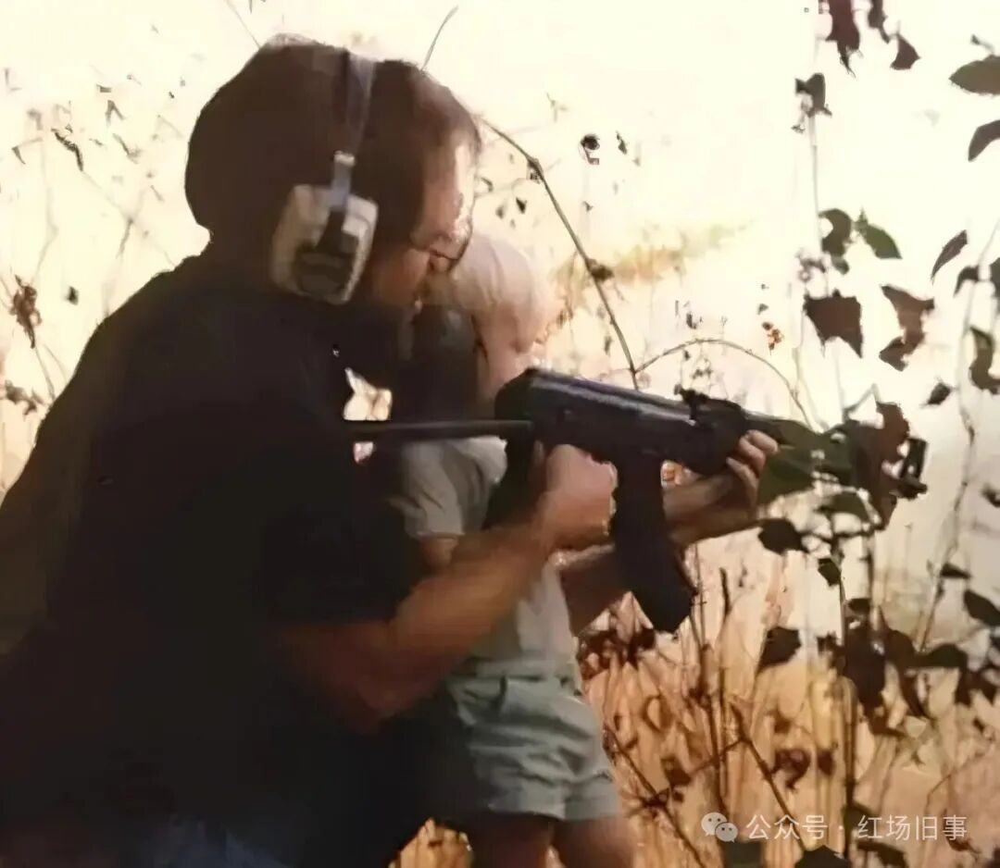
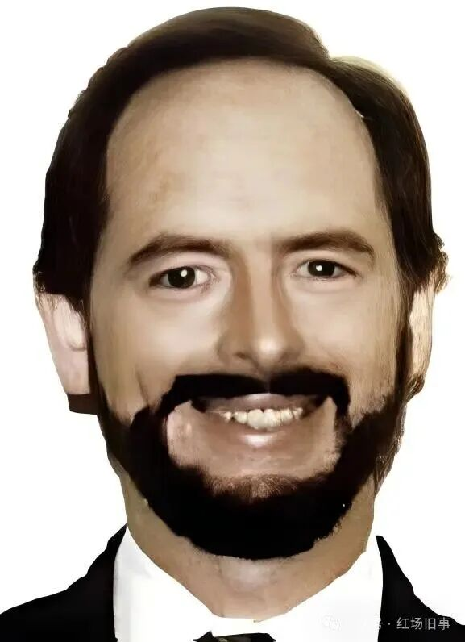

第13期 波利亚科夫递上的投名状里，玛丽亚•格伦的名字排第几？
第12期 FBI历史上最大的灾难：20年、6000页绝密文件，克格勃的顶级鼹鼠——汉森
楔子：1996年11月16日，杜勒斯机场下午4时，华盛顿杜勒斯国际机场。一个中年男人拖着行李箱走向登机口，目的地苏黎世。他穿着普通，步态从容，看起来就是个准备出差的商务人士。就在他准备递上登机牌的瞬间，几名便衣特工突然从两侧冲出，把他按在地上。“哈罗德·尼科尔森，你被捕了。”他没有挣扎。甚至没有表现出太多惊讶。
哈罗德·尼科尔森这个46岁的男人，是美国中央情报局（CIA）的高级官员，曾任驻马来西亚副站长、罗马尼亚站长，回国后在总部反恐中心任职，专门培训新特工。他持有最高级别的 “绝密/敏感” 安全许可。他也是美国有史以来被判间谍罪的最高级别CIA官员。更离谱的事，发生在他入狱之后。
一、堕落起点：离婚、缺钱、30万美元
尼科尔森的背叛，始于1994年。那一年，他刚结束在马来西亚的任期，被调回CIA总部担任反恐高级职务。表面上，这是职业生涯的又一个高光时刻。但私下里，他正在经历一场旷日持久的离婚官司。
尼科尔森和劳拉的结婚合影
1994年8月31日，法庭判决他与结婚21年的妻子离婚。他的月薪只有3418美元，却要每月支付650美元抚养费，还要抚养三个孩子。离婚前，他的财产只有：一栋联排别墅、一块价值4000美元的地皮、一个分时度假房。他缺钱。就在离婚判决的两个月前，1994年6月30日，尼科尔森从马来西亚往自己的美国账户里电汇了1.2万美元。调查人员后来发现，这笔钱的来源无法解释。同一天，他在吉隆坡与俄罗斯情报官员见了面。从1994年到1996年，尼科尔森利用职务之便，把大量机密情报卖给俄罗斯人。他通过个人旅行与俄方接头，地点包括伦敦、新德里、曼谷、吉隆坡、新加坡。每次见面后，他的账户里就会多出一笔钱。两年间，他总共拿到约30万美元报酬。
二、致命情报：他交出了什么？
尼科尔森在CIA工作了16年，最后的岗位是培训新特工。这个岗位让他接触到了CIA最核心的人才库。他交出的东西包括：一、所有他培训过的CIA新特工的姓名、照片和海外任务安排，这意味着这些人刚踏上岗位，就已经暴露；二、一名即将被派往莫斯科的秘密特工身份，莫斯科是CIA对俄情报的最前线，这名特工还没出发就已经废了；三、CIA在莫斯科情报站的运作细节，包括人员配置、行动方式；四、CIA线人的代码和报告摘要，这些人往往是自愿提供信息的外国公民，一旦暴露，面临的可能是死亡；五、对艾姆斯案审讯记录的总结，讽刺的是，艾姆斯是CIA上一个内鬼，尼科尔森连“前辈”被抓的经验总结都一起卖了。美国联邦调查局（FBI）在他办公室搜查时，发现了大量关于“俄罗斯”的绝密文件，与他的本职工作毫无关系。他的笔记本电脑里，存着被删除后又恢复的数十份机密文件。最离谱的是，FBI监控到他在办公室偷偷拍摄机密文件，他把文件的密级标记撕掉，一张一张拍下来。
三、落网：被改写的明信片
尼科尔森被抓，是因为一套“艾姆斯案后改革”的反间谍机制。1994年艾姆斯案后，CIA和FBI建立了前所未有的合作机制：CIA反间谍小组的负责人由FBI高级官员担任，每周召开联席会议，一旦发现泄密线索必须立即通知FBI。这套机制盯上了尼科尔森。他频繁出国、账户异常、测谎仪出现“无法解释的问题”。FBI开始24小时监控。他们在他的卧室里装了窃听器，听到他晚上在笔记本电脑上打字的声音。他们发现他从弗吉尼亚的邮箱里寄出明信片，收件地址是外国邮箱，用的是假名和假地址。明信片上写的都是暗语，其中一张只有一句话：“我很好。到时候雪应该不错。”他指的是1996年11月去瑞士与俄方接头：瑞士有雪。FBI把这些明信片悄悄截走、拍照、再放回去。他们甚至在尼科尔森的办公室里装了摄像头，拍到他趴在桌子底下偷偷拍摄文件的画面。1996年11月16日，在他登机飞往苏黎世之前，FBI收网了。
四、1997年判刑：23年，和三个孩子
1997年3月，尼科尔森认罪，他通过认罪协议避免了终身监禁，被判23年半。法庭上，他说了一段话：“我不会祈求同事和同胞的原谅，因为我知道他们不会原谅我。我失去了一切，那些对我来说珍贵而重要的一切。”他还说，自己之所以这么做，是为了三个孩子。法官听进去了。他的孩子们和父母写信求情，也被考虑了。那年，他的小儿子纳撒尼尔，12岁。

尼科尔森教儿子玩枪
故事到这里，本该结束了，但是后续的情节发展让人瞠目结舌。
五、狱中教子：一个父亲的“远程办公”
尼科尔森被关进俄勒冈州谢里顿联邦监狱。他主动要求到这里服刑——离父母家近，方便孩子们来探视。从1997年到2006年，他的小儿子纳撒尼尔从12岁长到21岁。高中毕业后，纳撒尼尔参军，成了一名伞兵，2004年因伤退役。
左：纳撒尼尔，右：尼科尔森

2005年之后，父子之间的通信和探视频率突然增加。2005年10月到2006年9月，尼科尔森给儿子写了7封信；2006年10月到2007年9月，他写了17封。
信里经常引用《圣经》句子，外人看不懂，但儿子懂。尼科尔森在信里告诉儿子：俄罗斯人还欠我一笔钱，你去要回来。2006年10月，纳撒尼尔第一次与俄罗斯特工接头。他交出了3样东西：一封“介绍信”、父亲的照片、一张探监时拍的照片。对方给了他5000美元现金。此后两年，纳撒尼尔飞赴墨西哥、秘鲁、塞浦路斯，与俄罗斯人见面至少6次。他把现金藏在游戏机盒子里带回来。在秘鲁那次，他带回7000多美元，其中4000美元藏在一个游戏机盒里。2008年12月，塞浦路斯接头前，纳撒尼尔给一个叫“南希”的女朋友发邮件：“南希，收到你的信真是太好了，我也爱你。希望可以很快见到你。”落款：“爱你的迪克。”“南希”是虚拟人物，“迪克”是他的化名。纳撒尼尔回来后不久，就被捕了。
六、收网与加刑
纳撒尼尔的异常早被FBI盯上了，一个锯厂的穷工人，哪来钱频繁出国旅行？FBI监听了他的电话、监控了他的邮件、在他的车上装了追踪器。2007年12月，他从秘鲁入境美国时被海关拦下。工作人员复印了他笔记本里的内容，发现记录着暗语和国外联系人地址，其中包括俄罗斯驻墨西哥城使馆。2008年，纳撒尼尔被捕。他后来与FBI合作，指证父亲。2011年1月18日，俄勒冈州联邦法院裁定，尼科尔森在狱中继续从事间谍活动、洗钱罪名成立，加刑8年。此时他已经59岁，原本2019年可以出狱的计划彻底泡汤。法庭上，尼科尔森哭了。他看着坐在旁听席上的小儿子说：“我很爱他……他从没令我失望过。我的失败只属于我一个人。”纳撒尼尔被判5年监禁，因配合调查获得“缓刑优待”。美国司法部当时评价：因间谍罪入狱的美国特工在服刑期间继续从事间谍活动，这一案在美国历史上是第一次出现。
尾声：一本永远不会出版的“回忆录”
2011年那次庭审，尼科尔森签了一份特殊的认罪协议：如果自己的故事被影视文学作品或其他营利机构采用，所获收益全部归美国政府。也就是说，他别想靠卖“传奇经历”赚钱了。俄罗斯方面呢？一个不愿透露姓名的美国政府官员说，俄罗斯人对尼科尔森当年被捕的细节特别感兴趣——“这可以帮助更多的俄方间谍在将来避免暴露身份。”但俄罗斯驻美大使馆的回应很简单：“我们绝对不就此类事件发表见解——我们的政策就是如此。”尼科尔森如今还在监狱里。他的儿子纳撒尼尔早已出狱，试图开始新生活。那个12岁时被父亲探监的孩子，后来成了一名间谍。他把父亲教的暗语、接头方法、藏钱技巧都用上了——用在了替父亲继续出卖美国情报这件事上。尼科尔森的案件，是美国谍战史上最离奇的案例之一——不是因为他的背叛，而是因为他把儿子也拉下了水。你认为，他“狱中教子”的根本原因是什么？欢迎在评论区分享你的想法。下期预告 乔治·布莱克：冷战时期最具破坏力的英苏双面间谍他是克格勃最值钱的“鼹鼠”，十年间毁掉英美整条东欧情报链，500人因他暴露。被判42年，他用绳梯翻过6米高墙，藏身汽车底逃出英国。普京亲自给他颁奖，英国媒体至今称他“叛徒”。98岁，死在莫斯科。下期，我们一起解密，一个从未属于英国的人，如何让军情六处恨了60年？第11期 从CIA反苏负责人到克格勃顶级间谍：艾姆斯的双面人生第10期 25年潜伏，出卖1500名特工，让克格勃全球情报网瘫痪，CIA的“宝石间谍”